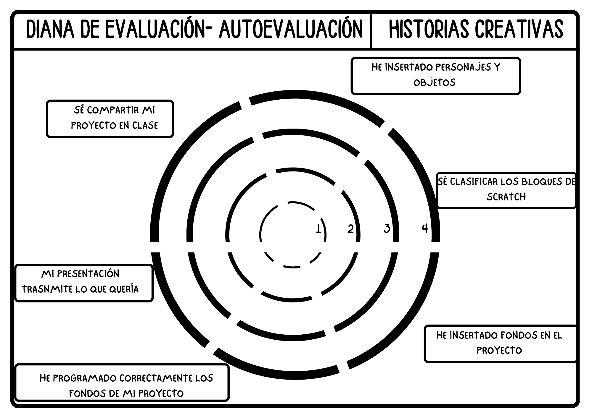
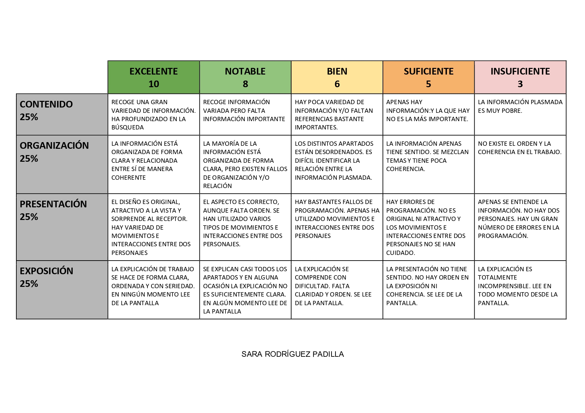

Rúbrica de evaluación y diana autoevaluación
Voy a utilizar dos instrumentos de evaluación a lo largo del proceso:
La diana de autoevaluación es una herramienta visual que facilita a mis alumnos y alumnas reflexionar sobre su propio proceso y desempeño. En este proyecto lo utilizo para que los alumnos y alumnas valoren aspectos clave de su programación en Scratch Jr.
La rúbrica de evaluación, que me permite valorar diversos componentes de la exposición de mis alumnos y alumnas. En nuestra exposición interactiva de programación de historias utilizando Scratch Jr., la evaluación se centra en la sustancia del proyecto y la manera en que se muestra. Con esta rúbrica, la retroalimentación será individualizada e incluirá notas y observaciones diseñadas para ayudar a los alumnos y alumnas a mejorar elementos específicos de su presentación.

Rúbrica de evaluación:
